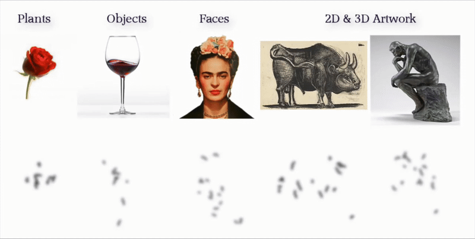
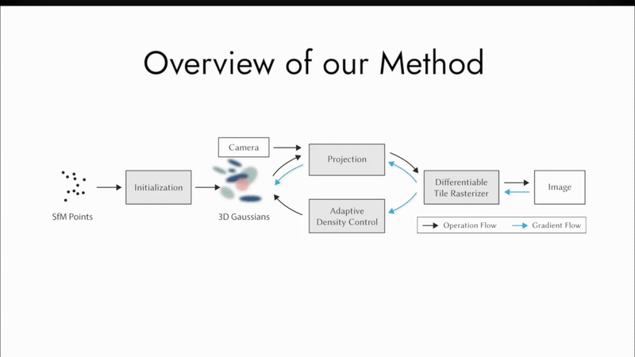
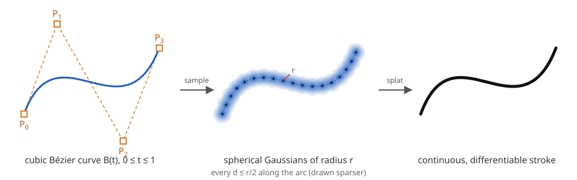
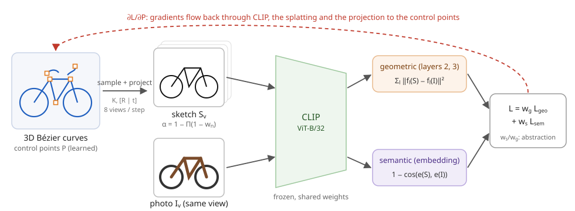
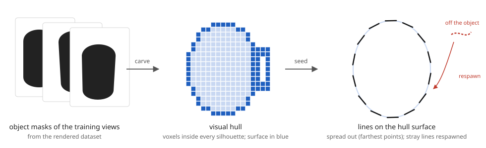

Sketch abstraction conveys an object with a few expressive strokes. We lift CLIP-guided sketch abstraction from 2D to 3D: a small set of 3D Bézier curves is optimized so that its renderings match multi-view images of an object under a CLIP-based perceptual loss. Each curve is rendered as a chain of spherical Gaussians, a constrained form of Gaussian splatting, which makes the whole pipeline differentiable with respect to the control points. The number of curves and the balance between CLIP's geometric and semantic terms span a controllable range from faithful wireframes to loose, abstract 3D sketches, which we study on 20 objects from Objaverse.
A good sketch is an abstraction: with a handful of strokes an artist decides which parts of an object carry its identity and leaves out the rest. The fewer strokes there are, the more each one has to say. Computers have learned to draw such sketches mostly in 2D, either from large collections of human drawings [8] or by optimizing strokes directly against an image.
CLIPasso [1] takes the second route. It renders Bézier strokes with a differentiable vector graphics rasterizer [9] and moves them until CLIP [2] sees the sketch and the photo alike, with no sketch data at all. The number of strokes sets the level of abstraction, and CLIPascene [10] extends the idea to whole scenes. A 2D sketch, however, belongs to one viewpoint: turning the object around needs a new, unrelated drawing, and nothing in the sketch describes the object's 3D structure.
We optimize the strokes directly in 3D. Every stroke is a cubic Bézier curve rendered as a chain of spherical Gaussians [3], so its projection into any camera is differentiable with respect to the control points. Supervising many views of the object at once makes the strokes consistent in 3D, without any 3D supervision. Two knobs control the result: the number of lines and the abstraction level, set by the ratio \(\lambda\) between the weights of CLIP's semantic and geometric losses.
The result is one 3D object that reads as a sketch from every direction. It can be inspected from any angle, and, when its strokes touch each other, it could be bent from wire and stand on a table. We study how the number of lines and the abstraction level shape these sketches on 20 objects from Objaverse [7], and add a connectivity constraint that turns every sketch into a single connected piece.
2D sketch abstraction. Sketch-RNN [8] learns to draw stroke by stroke from human doodles, which ties it to the categories and style of its training data. CLIPasso [1] needs no sketches: it optimizes 2D Bézier strokes through a differentiable rasterizer [9] so that the sketch and the photo agree in CLIP's intermediate (geometric) and final (semantic) features, and the stroke count sets the level of abstraction. CLIPascene [10] separates two axes of abstraction for scenes, fidelity and simplicity. We keep CLIPasso's objective and its two-term balance, and move the strokes to 3D.

Differentiable 3D representations. NeRF [11] and 3D Gaussian Splatting [3] reconstruct scenes from posed images by differentiable rendering; Gaussian splatting does so with explicit, anisotropic Gaussians that are fast to rasterize. We use a strongly constrained version: isotropic, single-color Gaussians of fixed size whose centers lie on Bézier curves, so the only free parameters are the curves' control points.

Curves from multi-view images. NEF [12] recovers parametric 3D edge curves from multi-view images, aiming at an accurate reconstruction of every edge rather than an abstraction with a fixed budget of strokes. Like classic silhouette-based methods, we carve a visual hull [13] from the object masks, but only to place the initial strokes.
3D sketches. 3Doodle [4] abstracts objects from multi-view images with view-independent 3D Bézier strokes combined with view-dependent contours, and Diff3DS [5] generates view-consistent 3D sketches with differentiable curve rendering and score distillation from a diffusion model. Our sketches use view-independent strokes only, so a sketch is a single physical object, and need nothing but posed images and CLIP, with no generative prior.
Wire art. Multi-view wire art [14] designs one connected wire sculpture whose shadows match a few given line drawings from chosen viewpoints. Our connectivity constraint aims at the same buildability, but starting from images of a real object and seen from every direction.
Each stroke is a cubic Bézier curve with control points \(\{\mathbf{P}_0, \mathbf{P}_1, \mathbf{P}_2, \mathbf{P}_3\} \subset \mathbb{R}^3\):
\[\mathbf{B}(t) = (1 - t)^3 \mathbf{P}_0 + 3(1 - t)^2 t\, \mathbf{P}_1 + 3(1 - t) t^2 \mathbf{P}_2 + t^3 \mathbf{P}_3,\quad t \in [0, 1].\]
It is sampled into centers \(\mathbf{c}_n = \mathbf{B}(t_n)\), spaced uniformly in arc length at most \(d = r/2\) apart, and each center carries a spherical Gaussian of radius \(r\):
\[\phi\left(\mathbf{x}; \mathbf{c}_n, r\right) = \exp\left(-\frac{\|\mathbf{x} - \mathbf{c}_n\|^2}{2r^2}\right), \qquad N = \left\lceil \frac{L}{d} \right\rceil + 1 \ \text{ centers for a curve of length } L.\]

A center is projected with the intrinsics \(\mathbf{In}\) and the camera pose \(\mathbf{Ex}\),
\[\mathbf{In} = \begin{bmatrix} f_x & 0 & c_x \\ 0 & f_y & c_y \\ 0 & 0 & 1 \end{bmatrix}, \qquad \mathbf{Ex} = \begin{bmatrix} \mathbf{R} & \mathbf{t} \\ \mathbf{0}^{1 \times 3} & 1 \end{bmatrix},\]
giving a pixel position \(\mathbf{u}_n\) and a screen radius \(r_n = f r / z_n\) at depth \(z_n\). The sketch is the union of all splats:
\[w_n(\mathbf{p}) = \exp\left(-\frac{\|\mathbf{p} - \mathbf{u}_n\|^2}{2 r_n^2}\right), \qquad \mathbf{V}(\mathbf{p}) = 1 - \prod_{n} \bigl(1 - w_n(\mathbf{p})\bigr),\]
drawn as dark strokes on a white background, \(\mathbf{S} = 1 - \mathbf{V}\).
A sketch view \(\mathbf{S}\) and the photo \(\mathbf{I}\) of the same view are compared with a frozen CLIP ViT-B/32, as in CLIPasso: intermediate layers measure geometry, the final embedding \(e(\cdot)\) measures semantics.
\[\mathcal{L} = w_g \,\mathcal{L}_{\mathrm{geometric}} + w_s \,\mathcal{L}_{\mathrm{semantic}}, \qquad \mathcal{L}_{\mathrm{geometric}} = \sum_{l \in \{2,3\}} \bigl\|f_l(\mathbf{S}) - f_l(\mathbf{I})\bigr\|^2, \qquad \mathcal{L}_{\mathrm{semantic}} = 1 - \cos\bigl(e(\mathbf{S}), e(\mathbf{I})\bigr)\]
The loss is averaged over 8 random views per step and over random perspective and crop augmentations. The ratio \(\lambda = w_s / w_g\) sets the abstraction level; we name the five levels after their weighting:
| abstraction level | \(w_g\) | \(w_s\) | \(\lambda = w_s / w_g\) |
|---|---|---|---|
| geometric only | 1 | 0 | 0 |
| geometry-weighted | 1 | 0.02 | 0.02 |
| CLIPasso default | 1 | 0.1 | 0.1 |
| equal weights | 1 | 1 | 1 |
| semantics-weighted | 0.1 | 1 | 10 |


We use 20 objects from Objaverse [7], each rendered from 100 training, 30 validation and 30 test views. All views below are interactive: drag to rotate; when released, the objects keep circling at a 20° elevation.
Columns add lines, rows move from purely geometric to strongly semantic supervision. Training replays the optimization; Done shows the final sketches. Pick an object below the grid.
One setting for all 20 objects; change the setting or switch to the ground-truth meshes at the top.
A connectivity loss pulls every curve towards another curve and every separate cluster towards the main one, and a final weld translates the remaining clusters until they touch. The result is one connected piece that could be built as a wire sculpture.
Means over the 20 objects on the held-out test views: CLIP similarity between sketch and photo, the fraction of stroke ink that falls on the object, and the Chamfer distance between the curves and the true surface.
Restricting Gaussian splatting to strokes turns CLIP-guided sketch abstraction into a 3D problem that can be optimized end to end from posed images. The number of lines moves a sketch from a few defining contours to a detailed wireframe, and the semantic weight trades geometric faithfulness for looser, more stylized strokes. Visual-hull initialization and respawning keep every stroke on the object, and the connectivity constraint makes the sketches physically buildable.